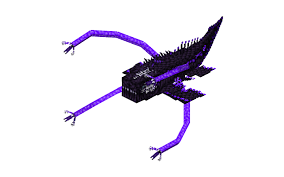

Home
Bosses
Armour and Tools
Dimensions
Others
.jpeg)
"Image from Minecraft Story Mode Fandom"
Netherite Monstrousity
The Netherite Monstrousity is a boss found in the Nether that is part of a mod called Cataclysm.
He has only a few moves he uses in which he just spits lava at you and then slams you into the ground.
The Netherite Monstrousity has a 2nd phase in which his slam attack lights you on fire.
The gear I would recommend would be Maxed out diamond or Netherite armour with a bow, bring a couple golden apples and mainly good food sources.
This boss drops the Infernal Forge which has a shockwave attack and is used as a sword and pickaxe.
He can be located using an eye of Monstrousity, crafted using 2 netherite scraps, 2 obsidian, 4 lava buckets, and one eye of ender.
"Image from MC"
Ignis
Ignis is by far the hardest boss in the entire game of Better Minecraft.
To summon him you have to kill the Ignited Revnant which is a miniboss, the ignited revnant will drop Burning Ashes which are used to summon Ignis
Giving you an effect called Blazing Brand which disables your armour.
He can also stun you which makes it so you can't do anything.
On top of all of that Ignis does too much damage and has a shield to block your attacks.
He has 3 phases, 1st is the first part of fighting this boss
which is just a base form nothing too special, he is orange in this phase.
2nd is the phase that he turns blue and does more damage and ups his lifesteal when he is attacking the player.
The 3rd phase is when you break his shield but he does more damage, more lifesteal and can summon fire from the ground and make explosions.
The gear I would recommend is fully maxed out Bone Reptile or regular Netherite with a bow, bring as many golden apples as possible with some regular food.
This boss drops Ignitium Ingots which can upgrade your Netherite Armour incredibly.
This boss can be located using the Eye of Flame, to craft this you need 3 blaze powder, 2 netherite scraps, 3 soul sands, and one eye of ender.

"Image from MC"
Ender Guardian
The Ender Guardian is a boss found in the Outer End Islands and is stronger than the Netherite Monstrousity.
The Ender guardian is has 2 phases. One where he has a helmet.
and Other he breaks the entire floor beneath you and then does more damage and summons more levitation balls.
The gear I would recommend is fully maxed out Netherite Armour with a Netherite Sword,
bring some golden apples and some good food like Steak or Porkchop.
This boss drops the Gauntlet of Guard which can pull enemys toward you.
This boss can be located using the Eye of Fort, To craft this you need 2 endstone, 4 purpur blocks, 2 shulker shells, and an eye of ender
"Image from MC"
The Harbinger
The Harbinger is a mechanical wither that is technology based.
He is harder than the Ender Guardian and is summoned using a nether star, which you can get by defeating a regular wither.
Once that is done you right click the body of the Harbinger and he will be summoned.
This boss can shoot missles and even fire a laser ray at you dealing a ton of damage.
He repeatively gives you the wither effect.
There are EMP's around the room which can be activated to stun The Harbinger and deal a little free damage to him.
The Harbinger drops a Witherite block which can be uncrafted to Witherite Ingots.
You can make the Mechanical-Fusion Anvil which can be used to forge boss weapons together to make them better.
You can also craft a Meat Shredder(Just a saw), a Rocket shooter which shoots rockets and tracking rockets by holding Shift, and finally a Gatling Gun which lights nearby things on fire and rapid fires little bullets.
It is almost impossible to locate this structure without the Eye of Mech, crafted with 4 redstone blocks, 4 iron ingots, and a eye of ender.

"Image from MC"
Leviathan
The Leviathan is a underwater boss that compares up to Ignis in how hard they are.
To summon The Levithan you have to craft the eye of abyss, which consists of 4 obsidian, 4 crying obsidian, and an eye of ender, to locate the eye of abyss.
This boss is underwater so you should brew a lot of water breathing potions and a couple night vision potions.
You should also get amethyst crab meat(which makes you immune to some of The Leviathan effects), in order to do that you have to find a lush cave and pray hope one spawns because they are rare.
Then go to an altar and place your crab meat onto the altar. Once that is done you have the blessed crab meat.
After you are gonna have to kill some minions in the Sunken City to craft the Abyssal Sacrifice, crafted with 1 nautilus shell, 1 iron block, 1 gold block, 1 diamond block, 1 emerald block, 1 amethyst block, Heart of the Sea, 1 coral chunk, and an Athame.
To get the coral chunk you have to kill a miniboss called the Coralssus. And for the Athame you have to kill Deepling Priests.
The gear I would recommend is fully enchanted Ignitium armour(If you have already killed Ignis), Netherite Armour, Ancient Metal Armour, and diamond armour.
For food I would take Blessed Crab Meat, Some ordinary food, and a lot of golden apples. This boss drops Tidal Claws and an Abyssal Egg.
The Tidal Claws acts like a grappling hook basically it can let you climb walls and shoots out a tentacle that locks onto enemys.
The Abyssal egg, which hatches into a Baby Leviathan, in order to tame you have to keep giving it Tropical Fish.
.jpeg)
"Image from Minecraft Mobs Wiki"
Ancient Remnant
The Ancient Remnant is a boss that is a skeleton of a dinosaur and is found in a structure called The Cursed Prymaid.
To locate this structure you have to craft an Eye of Desert which is crafted with, 2 chiseled sandstone, 1 emerald, 1 dead bush, 1 cactus, 1 rotten flesh, 1 bone, and an eye of ender.
Bring a brush because in order to summon the boss you have to sweep up suspicious sand to find it. You should also have Netherite or Ignitium armour as this boss is pretty tough.
Brew some night vision potions and some strength potions(If you want to). There are 2 minibosses that you can find called Wadjet and Kobolediator.
Once you have the Necklace of the Desert from brushing suspicious sand go to the big room and find the big dinosaur statue and right click it to summon the boss.
Once you have defeated the Ancient Remnant it will drop a Remnant's skull and paried with a sniffer egg can give you a friend. It also drops an ancient metal block which can be used to upgrade Netherite.
Image from "Planet Minecraft"
Ferrous Wroughtnaut
The Ferrous Wroughtnaut is a giant suit of metal with a diamond sword in his back.
This boss can be found Underground in a place called "The Wrought Chamber, which is completely randomly generated but can be found on your map in Better Minecraft. When you do locate him just know(This boss is basically only skill to beat no luck).
When you fight him at least have decent armour so he doesn't 1 shot you. When you do fight him the way to beat him is simple.
When he slams his giant metal axe on the ground attack the diamond sword in his back and that will do damage to him. This boss does way too much damage in a hit so amke sure you don't get hit.
This boss drops the wrought helmet which is an iron helmet that never breaks and his axe which does only 12 damage but is still better than any diamond things.
Image from Mowzie's Mobs Wiki
Umvuthi the Sunbird
Umvuthi the Sunbird is a boss located in the Savanna biome and is not that hard at all.
Umvuthi has the power of the sun on his side so he can do some incredible damage but he does not have good health at all.
If you know Umvuthi's attack patterns and what each move does your all set. But I recommend a enchanted bow and arrow and some enchanted diamond armour or better.
Umvuthi has minions that heal him when summoned and some even attack you.
This boss drops the sun's blessing which let's you do some crazy stuff with it like summon sun rays
Image from Mowzie's Mobs Wiki
Frostmaw
The Frostmaw is a giant icey boss located in almost all snowy biomes and is harder than the Ferrous Wroughtnaut.
The Frostmaw has mid health and does a lot of damage.
The Frostmaw can freeze you with its breath and will stun you temporarily he can also swipe his claws at you.
I would reccomend some enchanted diamond gear and a decent sword and a bow.
This boss drops his ice crystal which can be used to freeze other enemies.

Image from thumbnail called "Minecraft BossCraft Episode 17
Stalker
The Stalker is a boss which can be summoned in the ancient city by breaking things called Ancient Vases and the Stalker has a chance to come out of one and this boss has the power of the Warden.
If you really do want to fight then I would recommend enchanted netherite armour or diamond armour(or anything higher) with some golden apples and some regular food. This boss drops sculk crystals that do nothing.
Image from benimatic.com
Twilight Lich
The Twilight Lich is a boss that spawns in the Twilight Forest and is tough to beat if you don't know what you're doing.
In order to enter the Lich Tower you have to defeat the Naga which we'll cover later.
Whenever you are in the tower you have to break some spawners but there are also magic books that attack you and drop books when killed.
After you go up the staircase you go into the boss room. When that happens he has a shield and can't be damaged unless it's down.
To break the shield deflect the blue orbs back at him in order to break his shield, once that is done all you have to do is attack him regularly.
I would recommend a good food source with some golden apples and enchanted diamond but anything better is great. This should be your 2nd boss you kill.
This boss drops a scepter of scent staff that can be converted into a different one depending on what you combine it with.
Image from benimatic.com
The Naga
The Naga is a snake like boss that is located in a maze like structure.
When you are fighting this boss you can cheese it as long as you have a bow and arrow and just go on the wall and start shooting.
If you don't want to cheese it I would recommend some diamond armor or anything above and some a good food source because this boss is pretty easy if you ask me.
This should be the first boss you kill in the Twilight Forest

Image from benimatic.com
MinoShroom
The MinoShroom is a minotaur mooshroom that is in the Twilight Forest and is very agressive but pretty easy.
Whenever you arrive you have to face regular cow minotaurs(and other random things that spawn there).
The boss is pretty easy so i'd recommend enchanted diamond armor or better with a decent food source.
The boss wields a Minotaur Diamond Axe and drops a lot of beef when killed. You should kill this boss 3rd out of all bosses.
Image from benimatic.com
Alpha Yeti
The Alpha Yeit is again a boss from the Twilight Forest.
This boss is mildly tough boss that resembles a yeti and attacks almost everything it sees and Yeti has a few abilities like throwing you up in the air and other things.
I would recommend enchanted diamond armour or better. This boss should be the 7th boss you kill

Image from benimatic.com
Knight Phantom
The Knight Phantom is a boss found in the Twilight Forest and is pretty tought if you don't know what you are doing.
When fighting this man he summons a bunch of clones that you have to take out before you you can hit the Knight Phantom.
The Knight Phantom doesn't really do much but in order to enter the area you have to have killed the Hydra(we'll talk more about the Hydra later). I recommend enchanted diamond or better armour with a good food source.
This man unlocks a chest when defeated that gives you a bunch of phantom metal stuff and a trophy. You should kill this boss 5th out of all bosses.

Image from DeviantArt
Hydra
The Hydra is boss in the twilight forest that is tough if you don't know what you're doing. This boss looks like a 3-headed dragon ready to rip your face off.
If you want you can make the fight long by not attacking the lowered head but I recommend you attack the lowered head.
For the armour I recommend Netherite or better this guy is pretty tough if you ask me. This should be the 4th boss you try and kill in the Twilight Forest. I recommend enchanted Netherite or better with a good food source

Image from Benimatic.com
Snow Queen
The Snow Queen is again a boss from the Twilight Forest and is not that tough and can give some really neat loot at the Aurora Palace.
This boss is not that tough to be honest still pretty tough if you don't know what you're doing. This boss should be the last boss you kill. When you're at the palace you should pray for a glass sword in one of the chests because it does 20 points of damage in one hit

Image from Benimatic.com
Ur-Ghast
The Ur-Ghast is a boss that is a much much larger version of a regular Ghast that is also a lot tougher and harder.
In order to beat this boss you should use a enchanted bow and arrow or bring a redstone torch and light traps that suck the Ur-Ghast in and be able to hit it with your sword.
I would recommend Enchanted Netherite or better with a good food source.
.png)
Image from MC
Awful Ghast
The Awful Ghast is a boss that can be summoned with a Nether Star obtained from killing a Wither. You must right-click an Awful Ghast Altar in order to summon this boss.
This boss structure can be located in the Nether and is pretty neat to find because you can find Tungsten ore which makes you immune to fire and wither damage and is a little better than Netherite.
When you kill this boss it will drop an "Awful Gun" not as in this gun is awful it's actually good. I recommend Netherite or better with a good food source and some golden apples.

Image from MC
Nether Keeper
The Nether Keeper is a boss from the mod Stalwart Dungeons and can wreck you in enchanted full Netherite if you don't know what you're doing.
This boss only attacks you with his fist in a confined space and plows through your health.
I would recommend enchanted Netherite(If you know what you're doing) and a really good food source like golden apples and mixed salads and maybe even some Enchanted Golden Apples.

Image from MC
Summoner
The Summoner is a boss from the Everbright and is pretty deadly and hard to kill. The boss always teleports around and summoning people and also throwing projectiles at you in the process. This boss is also super annoying because